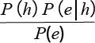
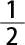
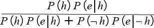
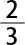
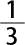
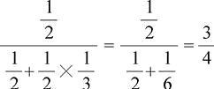

我们在第二章解释过，概率论是17世纪发展起来的。在随后的几个世纪，概率得到了广泛应用；支配概率的主要法则，也就是加法法则与乘法法则，已是尽人皆知了。然而直到20世纪，概率论都还没有得到严格的公理化。
中译本边码：161
第一个公理系统是数学家柯尔莫哥洛夫（Andrey Kolmogorov）于1933年提出来的。这是最著名的一个公理系统。但是，还有其他很多替代性的公理系统。在这里，我就要使用这样一个替代系统，因为柯尔莫哥洛夫的公理并没有包含乘法法则，或者有关条件概率的任何陈述。（对条件概率的完整解释参阅第三章。）柯尔莫哥洛夫使用了只涉及非条件概率的公理来定义 条件概率。但是，这样做就是假定了谈论条件概率实际上 就是在谈论非条件概率。按照第三章与第四章所论及的基于信息的解释（在那里命题或信念之间的关系是核心），以及第七章与第八章所论及的基于世界的解释（在那里，属性与集合体或者结果与可重复条件之间的关系是核心），我更愿意把条件概率当作基础的和初始的。
以下公理是以那些德·菲尼蒂所喜欢并在《概率的哲学理论》（Gillies 2000：第四章）中使用的公理为基础的。然而一个关键的差别在于，他们并没有假定概率涉及的是事件而不是命题。
中译本边码：162
1. 对任意事件（或命题）E ，0≤P（E ）≤1。
2. 当Ω是一个确定的事件（或命题）时，P（Ω）＝1。
3. 当E 1 ，…，E n 是互不相容且穷尽无余的事件（或命题）时，P（E 1 ）＋…＋P（E n ）＝1。
4. 当E 与F 是任意两个事件（或命题）时，P（E &F ）＝P（E, F ）P（F ）。
第三条公理中出现的短语“互不相容”与“穷尽无余”需要解释一下。一方面，两个（或多个）事件是互不相容的，如果其中仅有一个能够发生。同样，两个（或多个）命题是互不相容的，如果其中仅有一个能够为真。另一方面，两个（或多个）事件是穷尽无余的，如果其中至少一个必须发生。两个（或多个）命题是穷尽无余的，如果其中至少一个必须为真。互不相容且穷尽无余的两个事件的例子是“英格兰队在1966年获得世界杯”与“英格兰队在1966年没有获得世界杯”。互不相容且穷尽无余的两个命题（并不表示事件）的例子是“一加一等于二”与“一加一不等于二”。
公理3是加法法则 。《概率的哲学理论》（Gillies 2000： 59—60）表明它也可以陈述如下：
P（E 或者F ）＝P（E ）＋P（F ），这里的E 与F 是任意两个互不相容的事件（或命题）。
加法法则也有一个更一般的形式，甚至适用于E 与F 并非互不相容的时候：
P（E 或者F ）＝P（E ）＋P（F ）－P（E &F ），这里的E 与F 是任意两个事件（或命题）。
公理4是乘法法则 。当E 与F 互相独立的时候，它有如下具体形式：
P（E &F ）＝P（E ）P（F ），这里的E 与F 是任意两个相互独立的事件（或命题）。
如果无论E 是否发生都不影响F 发生与否，那么，E 与F 就是两个相互独立的事件，反之亦然。如果其中一个的真不影响另一个的真，E 与F 就是两个相互独立的命题，反之亦然。独立事件的例子是“你明天上午穿红色裤子”与“我今天中午餐吃了意大利面”。（抛掷硬币所得的结果也典型地被当作是独立事件。）相互独立的命题的例子是“二乘二等于四”与“巴黎是法国的首都”。
中译本边码：163
贝叶斯定理是从概率公理推出的一个结论。它用来解释我们的信念应该如何随着时间而改变，也被用来解释这样一个相关的问题：在科学中，理论何以能够得到确证。
中译本边码：164
设想我们正在讨论某个假说h 以及某个证据e 。在日常生活中，h 可能是“明天香港将会下雨”，而e 可能是“香港今天下雨了”。在科学中，h 可能是相对论，而e 可能是“在飞行器上环游世界的原子钟变得跟与此同时留在地球上的钟不同步”。
适合于任意这样的h 与e 的贝叶斯定理可以写成下面这样：
P （h ｜e ）＝

P （h｜e ）是h 的后验概率。它是在e 存在（即假定e 为真）的情况下h 的概率。
P （h ）是h 的先验概率。它是在e 缺席（例如在e 被发现或者被考虑之前）的情况下h 的概率。
P （e｜h ）是基于h 的e 的可能性 。它是在假设h 为真的情况下e 的概率。它所测量的是在什么程度上h 预测e 。
最后，P （e ）是e 的边际可能性 。它是在不假设h （即独立于h 是否为真）的情况下e 的概率。
中译本边码：165
为了表明贝叶斯定理是如何运行的，让我们来考察一个简单的场景。
你正在参加一项智力竞赛节目。给你看的是两个袋子A和B里面的东西。A里面是三只黑色的兔子。B里面是两只黑色的兔子和一只白色的兔子。之后两个袋子都被封口了，因此你也看不到袋子里面是什么。
接下来，把两个袋子弄混，然后随机选择其中一个袋子。节目主持人从被选出的袋子中随机取出两只兔子，并且把每一只都放开，让其在演播室自由跑动。这两只兔子都是黑色的。接下来的这个问题等着你：“这个袋子里面的最后一只兔子是黑色的吗？是还是不是呢？”如果你回答正确，你将赢得一百万美元。此时，你该怎么做呢？
你知道，正确的回答依赖于主持人随机选择的是哪个袋子。如果是袋子A，那么回答会是“是”。如果是袋子B，回答就是“不是”。但是，他挑选的是哪一个呢？当h 是“这个袋子是A”，而e 是“取出两只黑兔子”时，如果你知道P （h｜e ）的值，会是有用的。但是，很难搞清楚这个值是什么。
引入贝叶斯定理，它给出了一种规整的方法，可以计算P （h｜e ）的值。下面就让我们来完成这个计算：
（1）最初在A与B之间的抽取是随机的。所以，主持人取出A与取出B的可能性是相同的。因此，P （h ）＝

。（2）P （e｜h ） (1) 是在假定 最初选出的袋子是A的情况下 ，随机取出两只黑兔子的概率。既然袋子A中只有黑兔子，我们就不得不得出结论说，从这个袋子中取出来的总是黑兔子。所以，P （e｜h ）＝1。
到目前为止，一切顺利；我们只需要把另外一个值，即P （e ），代入贝叶斯定理的右侧，就可以计算出P （h｜e ）的值。但P （e ）是什么呢？
如果能注意到从概率公理推出的如下结论，对我们来说将会是很有帮助的：
P （e ）＝P （e ）P （e｜h ）＋P （┓h ）P （e ｜┓h ）
由此，我们可以把贝叶斯定理重写如下：
中译本边码：166
P ＝

现在我们就能很容易地继续进行前面的计算了：
（3）P （h ）P （e｜h ）可以从步骤（1）与（2）的结果中计算出来：
P （h ）P （e｜h ）＝ ×1＝ 。
（4）如果A不是最初被选出来的袋子，那么当时选出来的必定是B。因此，┓h 实际上相当于假设最初被选出来的袋子是B。而正如在（1）中所注意到的，最初在A与B之间的抽取是随机的。因此，P （┓h ）＝ 。
（5）P （e ｜┓h ）是在假定 最初选出的袋子是B的情况下 ，随机取出两只黑兔子的概率。它等于第一次抽取得到黑兔子的概率（当三分之二的兔子是黑色的时候），乘以下一次抽取得到黑兔子的概率（当二分之一的兔子是黑色的时候）。因此：
P （e ｜¬h ）＝

× ＝
现在我们有了所需要的一切。
P （h ｜e ）＝

如果你期待的是一只黑色的兔子，而不是一只白色的兔子，那么你就对了。距离赢得一百万美元你就更近了一步……
(1) 原文此处为P（h｜e），有误，应为P（e｜h），在中译本中更正。—— 译者